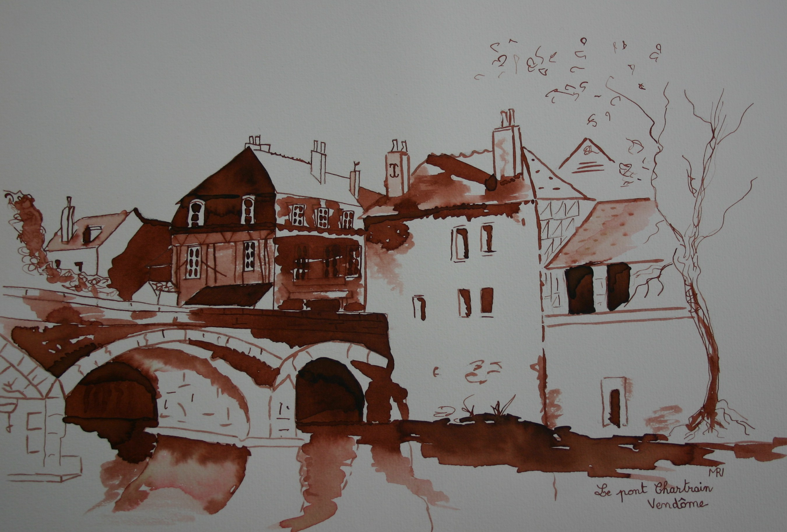
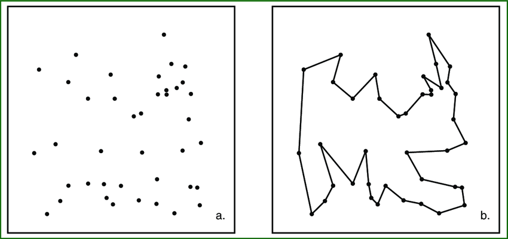
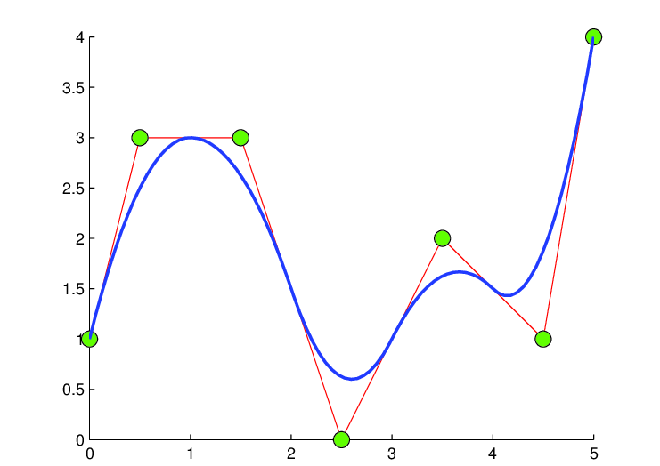

Image Manipulation¶
The objectives of this first part is to create a Python class which allows you to do a set of manipulations on a starting image (png, jpg, svg,…).
Convert the departure image to monochrome. Then Convert the image to white and black.
Extract the drawing coordinates, then calculate the Euclidean distance between these points.
Search the optimal path that connects the drawing points, by using the nearest neighbor method.
Convert tours into parametric spline curves.
Monochrome image¶
Monochrome consists, in photography, of representing only one dominant color in the same photo. As its name suggests, the photo is “mono” (single) “chrome” (color), therefore of single color.
Here is an example of monochrome image:
Nearest neighbor search¶
Nearest neighbor search (NNS), as a form of proximity search, is the optimization problem of finding the point in a given set that is closest (or most similar) to a given point. Closeness is typically expressed in terms of a dissimilarity function, distance or cost.
The nearest neighbor method is one of the heuristic methods which allows to find the shortest closed path (closed graph) which connects a set of points, passing through all the points. These are the steps of the algorithm:
Initialize all points as unvisited.
Select an arbitrary point, set it as the current point u. Mark u as visited.
Find out the shortest edge connecting the current point u and an unvisited point v.
Set v as the current point u. Mark v as visited.
If all the points in the domain are visited, then terminate. Else, go to step 3.
In this class, the set of points is presented by the points of non-zero pixels. The optimization criterion is the Euclidean distance between the non-zero pixels.
Reference:
https://en.wikipedia.org/wiki/Nearest_neighbor_search
Here is an example obtained by the nearest neighbor method
Spline curves¶
In mathematics, splines are functions described by an ensemble of polynomials.
The term “spline” is used to refer to a wide class of functions that are used in applications requiring data interpolation and/or smoothing. The data may be either one-dimensional or multi-dimensional.
in this class we used the function Scipy.UnivariateSpline() which allowed to convert tours into parametric spline curves.
Reference:
https://blog.finxter.com/fitting-data-with-scipys-univariatespline-and-lsqunivariatespline/
https://en.wikipedia.org/wiki/Spline_(mathematics)
Here is an example of function approached by parametric spline curves
-
class
FourierDrawing.ImageManipulation.Imgmanip.Imagemanip(url)¶ -
black_and_white()¶ Convert image to black and white
-
contours_search(plot=True)¶ Get the image tour using the nearest neighbor heuristic
-
convert_binary(scale=3, thresh_val=200)¶ Convert to binary image with 0 or 255 array values
-
distance_matrix()¶ Get non-zero pixel coordiantes than calcualte distance between each pair of them
-
get_splines(degree=1, plot=True)¶ Smooth the curves tour angles
-
show()¶ Show raw image and his informations
-
show_black_and_white()¶ Show black and white image
-
single_color()¶ Convert image to single color
-